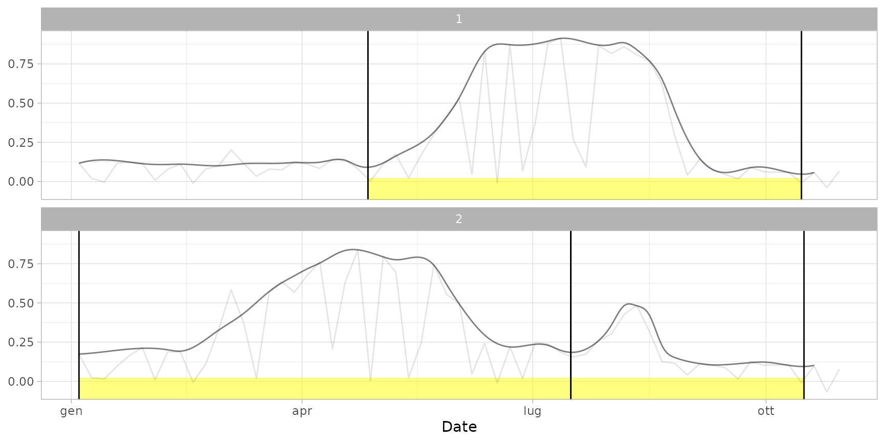
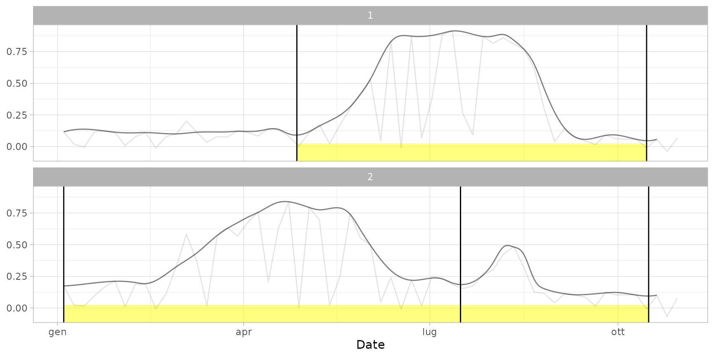
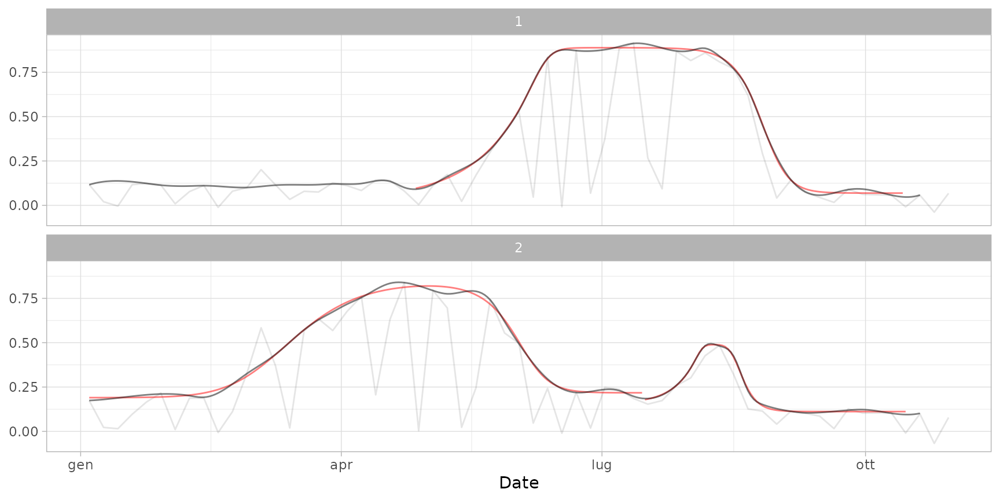
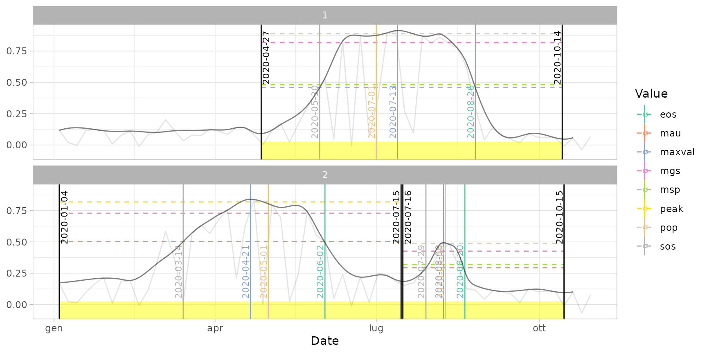
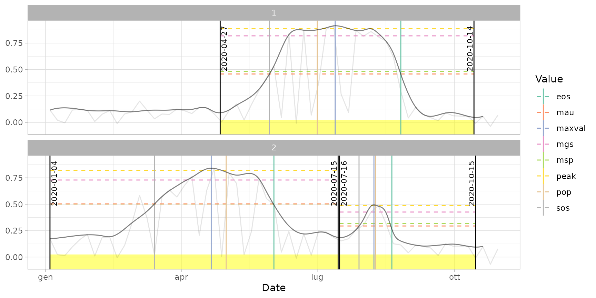
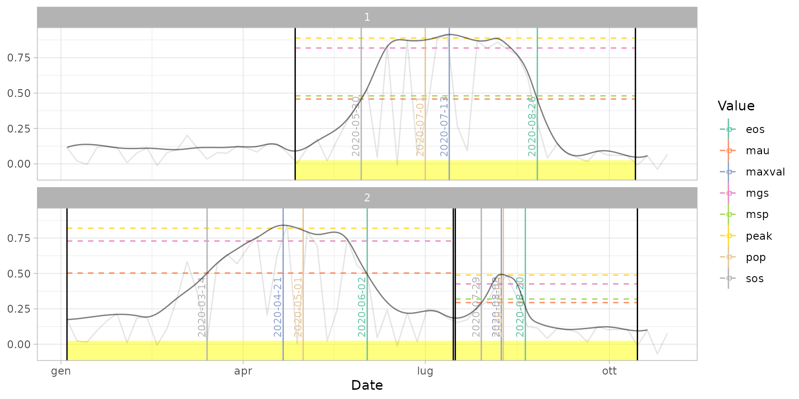
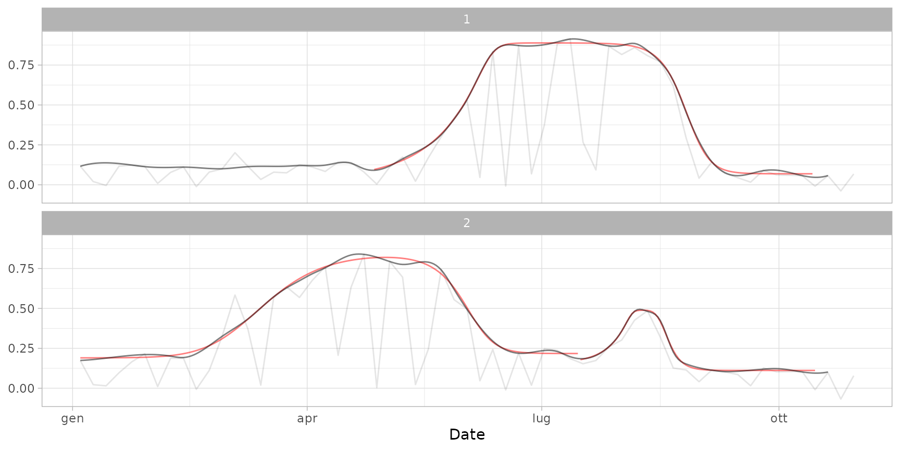
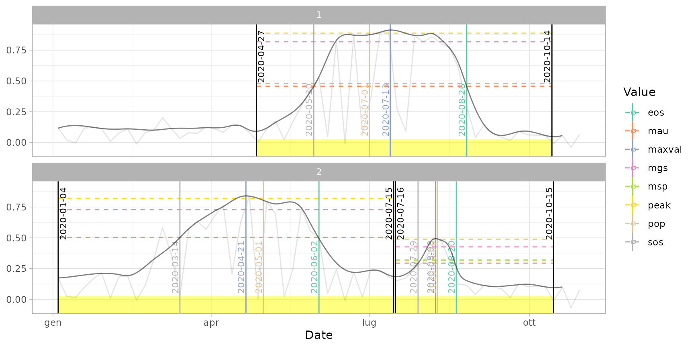
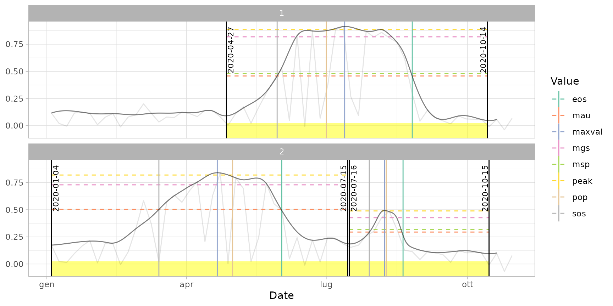
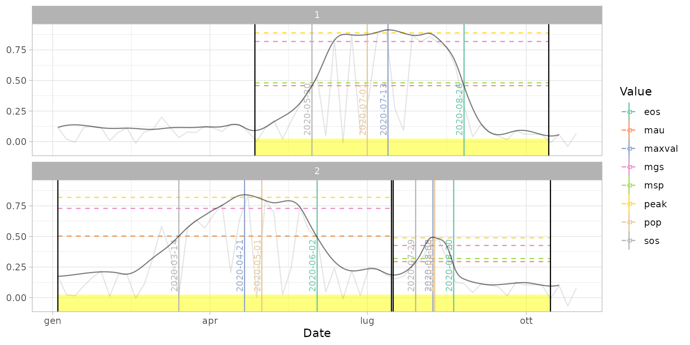

Plot a s2ts time series, using {ggplot2} routines.
# S3 method for s2ts
plot(
x,
pheno,
fitted,
plot_points,
plot_rawline,
plot_smoothed,
plot_fitted,
plot_cuts,
plot_cycles = TRUE,
plot_dates = FALSE,
pheno_metrics,
...
)Arguments
- x
Object of class
s2tsto be plotted.- pheno
(optional) Output of
cut_cycles()- fitted
(optional) Output of
fit_curve()- plot_points
(optional) Logical: should raw point values be plotted? Default: only if
phenoandfittedare not provided.- plot_rawline
(optional) Logical: should lines connecting raw points be plotted? Default: yes. They are represented as dark grey lines, or as almost transparent lines if smoothed values exist and are represented.
- plot_smoothed
(optional) Logical: should lines connecting smoothed values be plotted? Default: yes (if exist). They are represented as dark grey lines.
- plot_fitted
(optional) Logical: should double logistic curves be plotted? Default: yes, if provided. They are represented as red curves.
- plot_cuts
(optional) Logical: should cuts between cycles be plotted? Default: yes, if provided in
phenoor infitted. They are represented as black vertical lines.- plot_cycles
(optional) Logical: should existing cycles be highlighted? If TRUE (default), existing cycles are highlighted with yellow bands.
- plot_dates
(optional) Logical or character: if TRUE, plot the dates of cycle cuts and phenology metrics; if FALSE (default), do not plot anything; if
"cycles"or"pheno", plot only cycle cuts or phenology metrics.- pheno_metrics
(optional) Character vector containing the names of the phenological metrics to be plotted. If not provided or if
pheno_metrics = "all", all available metrics are plotted.- ...
Not currently used.
Examples
# \donttest{
# Plot raw time series
data(ts_raw) # sample raw time series
plot(ts_raw)
 plot(ts_raw, plot_rawline = FALSE) # show only points
# Plot smoothed or filled time series
data(ts_smoothed) # sample smoothed time series
data(ts_filled) # sample filled time series
plot(ts_smoothed)
plot(ts_raw, plot_rawline = FALSE) # show only points
# Plot smoothed or filled time series
data(ts_smoothed) # sample smoothed time series
data(ts_filled) # sample filled time series
plot(ts_smoothed)
 plot(ts_filled)
plot(ts_filled, plot_rawline = FALSE) # avoid plotting raw line
plot(ts_filled, plot_smoothed = FALSE) # plot only raw line
plot(ts_filled)
plot(ts_filled, plot_rawline = FALSE) # avoid plotting raw line
plot(ts_filled, plot_smoothed = FALSE) # plot only raw line
 # Add phenological information
data(dt_cycles) # sample data frame with cycle cuts
data(cf) # sample object with curve fitting
data(dt_pheno) # sample data frame with phenological
plot(ts_filled, pheno = dt_cycles) # default plot with cycle cuts

plot(ts_filled, pheno = dt_cycles, plot_points = TRUE) # show also points
plot(ts_filled, pheno = dt_cycles, plot_dates = TRUE) # print dates
# Add phenological information
data(dt_cycles) # sample data frame with cycle cuts
data(cf) # sample object with curve fitting
data(dt_pheno) # sample data frame with phenological
plot(ts_filled, pheno = dt_cycles) # default plot with cycle cuts

plot(ts_filled, pheno = dt_cycles, plot_points = TRUE) # show also points
plot(ts_filled, pheno = dt_cycles, plot_dates = TRUE) # print dates
 plot(ts_filled, pheno = dt_cycles, plot_cycles = FALSE) # avoid highlighting cycles
plot(ts_filled, fitted = cf) # default print with cycles (cuts and curves)
plot(ts_filled, fitted = cf, plot_cuts = FALSE) # show only curves

plot(ts_filled, fitted = cf, pheno = dt_pheno) # plot curves and metrics
plot(ts_filled, pheno = dt_pheno, plot_dates = TRUE) # print all dates

plot(ts_filled, pheno = dt_pheno, plot_dates = "cycles") # print only cut dates

plot(ts_filled, pheno = dt_pheno, plot_dates = "pheno") # print only phenological dates

# }
plot(ts_filled, pheno = dt_cycles, plot_cycles = FALSE) # avoid highlighting cycles
plot(ts_filled, fitted = cf) # default print with cycles (cuts and curves)
plot(ts_filled, fitted = cf, plot_cuts = FALSE) # show only curves

plot(ts_filled, fitted = cf, pheno = dt_pheno) # plot curves and metrics
plot(ts_filled, pheno = dt_pheno, plot_dates = TRUE) # print all dates

plot(ts_filled, pheno = dt_pheno, plot_dates = "cycles") # print only cut dates

plot(ts_filled, pheno = dt_pheno, plot_dates = "pheno") # print only phenological dates

# }